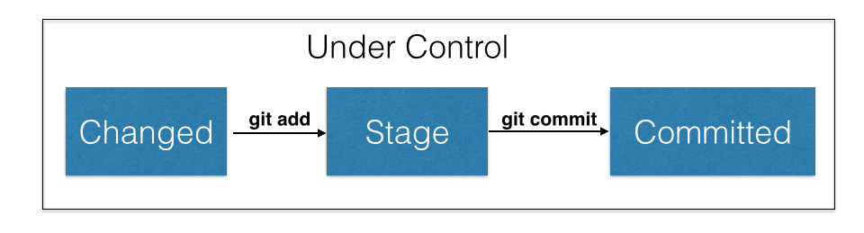
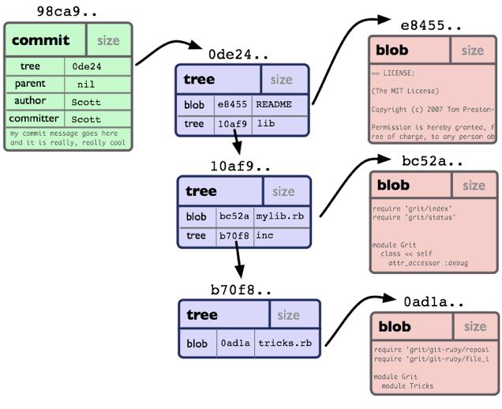
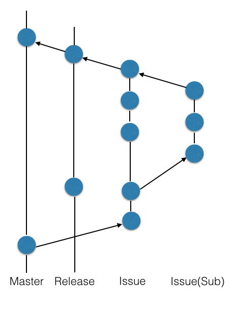
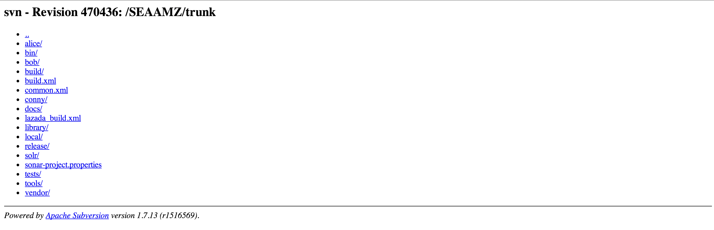

Git - Introduction
What we want?
What inside?
Workflow
Lets try to code interactive
Author - Alex Sharov
What we want?
- Feature management
- Release management
What inside?
File sates

Commit states
Actually commit doesn't have states. Commit just exists. Always 
References
- Commits - tree
Then commit can has more than one parent - merge commit - Branches/Tags - it's just references on some commit
- When you merging branches - you operate by commits, not by files/folders
Branches states
- Exists local branches and remote
- All what you do, usually working with ACTIVE LOCAL branch
- After you complete feature you must to push it to remote repository (git push)
- Multiple remote repositories (Why we need it? Next slide)
How usually working open source projects
- Exists official project repository (upstream)
- You have no access to push in upstream
- You make fork (origin)
- Implement feature (local)
- Push to origin
- Send Pull Request to upstream
- When upstream manager will review feature, he will accept your Pull Request
- When you need update local repository from upstream, you do:
git pull [--rebase] upstream
Workflow
Question: What is stable?
Answer: What we have on live
Lazada Workflow

Stability
master -> releases -> features
stable ----------------> unstable
Feature management
- When we start feature from master, then we can deploy any multiple of features
- We can use merge! Because we will not loose author of code
Lets try to code interactive
Part 1 - First commit
git init
git add
git commit
git commit //commit not added filePart 2 - branches
git branch
git checkout
git merge
git commit -am
git branch -l
git branch -la
git branch -lrPart 3 - rebase
git rebase
git rm //vs just rmPart 4 - log
git log
git log -3
git config --global core.pager cat
git log -1 --format="%H %an %cn"
git status
git config --global color.ui true //colorize output :-)
git config --global core.editor "vim"Part 5 - remote branches
git remote add
git remote rm
git remote show
git remote show originPart 6 - tags
git tag
git push --tags
git checkout v0.0.1Part 7 - branch naming
- Problem: need to split all branches to groups. Bugs/Issues/Core/BlaBla
- issues_* vs issues/*
Globally - why Git
Why Git is good for feature management
- Very cheap branching(not copy based)
- Supports isolating feature work (no more commits to trunk)
- Awesome Bitbucket and Jira integration
- If somebody do Code review or Integration for you
Annotations (svn blame) will still show your name - I never waited until merging will finish at Friday evening
2014! Are you F.... serious?

Why Git is good for release management
- Branches/Tags - it's just references on some commit
Then delete last N commits from branch - super fast operation -
If branch 1 start from HEAD of branch 2, then for merging 1 to 2
You need just change HEAD of branch 2 - It's called - fast-forwarding
- Of course it's optional
Git thinks - "Sysadmins are humans"
- Access - build on SSH
- Build in backup
- If you want to host Bitbucket on our servers, use
Stash
With same awesome Jira integration
Be professional - use code style!

Code Style Guides
Rocket Guide
Local Guide
If your commit brake code style - you receive
BIG RED EMAIL
from Jenkins
Don't forget: git push :-)
- Presentation Link: http://slides.lzd.co/git
- Source: https://github.com/nizsheanez/lzd-git-intro.git
Author - Alex Sharov